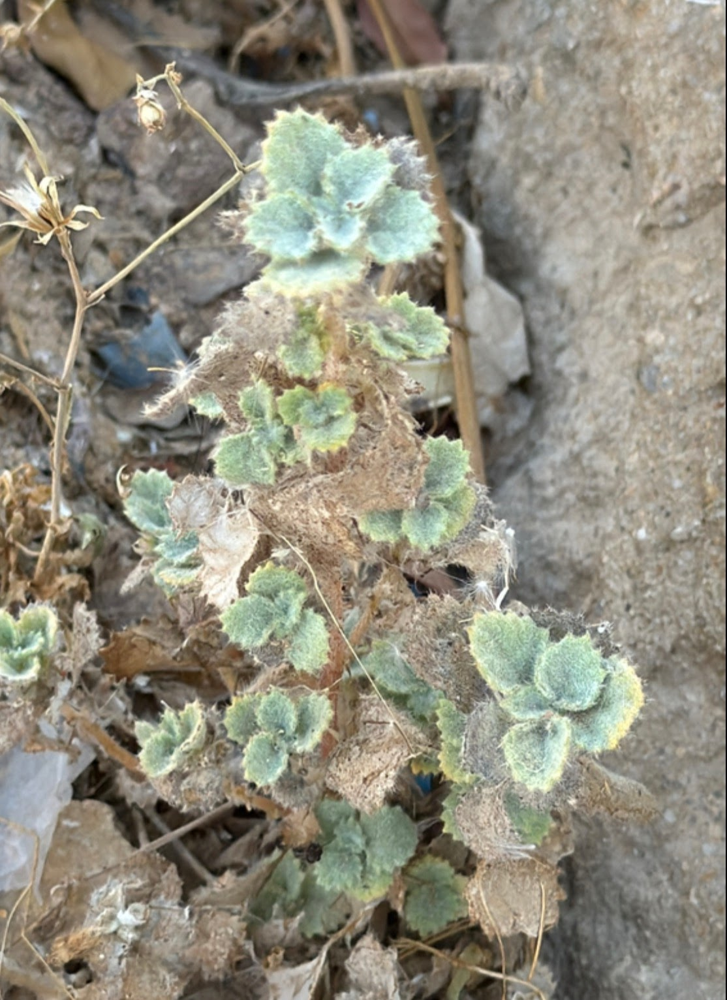
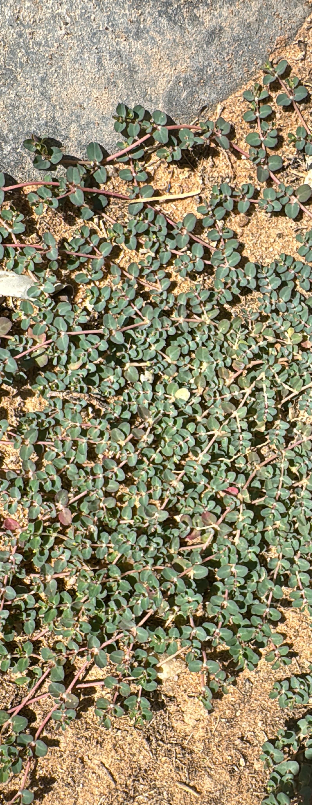
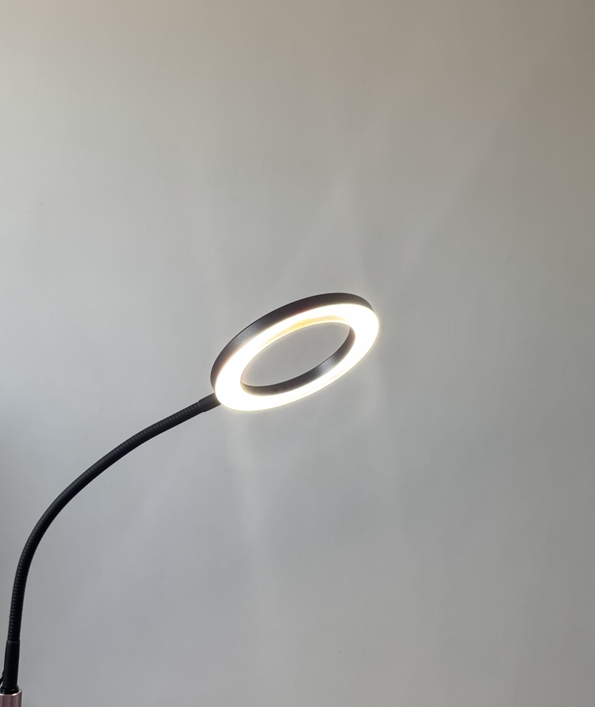

Desert nettle kills young competition
After the area the desert nettle was growing in had some runoff water, younger plants emerged and competition started...
PhenologyWoodlandMoisture
Independent botanical observatory
A living record of plants, places, and the quiet systems that connect them—observed slowly, documented carefully, and shared openly.

A practice of patient observation
This archive is an independent, long-term study of botanical life. It is a place for field notes, imperfect experiments, photographs, questions, and the slow accumulation of knowledge.
Read the full mission →From the field journal

After the area the desert nettle was growing in had some runoff water, younger plants emerged and competition started...
Two new leaves emerge in this plant despite difficult conditions.
↗Trash clings to the plant's leaves, some of which act as a shade cloth for said leaves leading them to be healthier.
↗Notes on timing, plant condition, and area condition.
↗Growing collection
Browse an evolving archive of native plants, their habitats, ecological relationships, and the moments in which they were encountered. This is strictly for searching plants that have been documented on this site.
Browse by family · habitat · alphabetically
Current inquiry

How would Ficus benjamina respond to less-than-ideal conditions for 5 months, neglects for 1 month, and ideal conditions for 6 months.

Growing Euphorbia serpens (also known as matted sandmat) indoors under growlights to challange its resilient structure.

A comparison between two different grow lights on Epipremnum aureum.
Research library
Literature reviews, independent studies, reading notes, and works in progress from the Flora Archive.
Browse the library →FEATURED RESEARCH
A short description of this review, study, or research question will go here.
12 SOURCES · IN PROGRESS
Thinking in public
Working ideas, methods, and questions—not conclusions carved in stone.
A visual record